Typescript
JAVA
JS / ES6
VUEJS
HTML
CSS
PHP
TWIG
SQL / MYSQL
RUBY
PYTHON
TINYDB
BOOTSTRAP
NODEJS
JQUERY
SASS
GIT
C# / .NET
COBOL
TortoiseSVN
-
PROGRAMMIERSPRACHEN
Java war für mich der erste 'echte' Einstieg in die objektorientierte Entwicklung. Beruflich arbeite ich aktuell mit C# sowie mit COBOL.
-
SKRIPTSPRACHEN
Ruby war die erste Programmiersprache, mit der ich programmiert habe. Als Frontenddeveloper habe ich unter anderem mit VueJS und der PHP Template Engine 'Twig' gearbeitet. Javascript habe ich pünktlich zum ES6-Update kennengelernt. Für ein großes Schulprojekt habe ich in einem kleinen Team mit Python und Flask einen vollständigen Webshop entwickelt.
-
MARKUP & STYLESHEET
Mit HTML5, CSS3, Bootstrap & JQuery ging es Ende 2016 los. Diese Website nutzt all diese Technologien, wobei ich das Design komplett eigenständig entwickelt habe. Lediglich das Grid-System und die Navigation erinnern noch an Bootstrap.
-
VERSIONSVERWALTUNG
Git, TortoiseSVN
-
DBMS & DATENBANKSPRACHEN
& DATENBANKENZurzeit arbeite ich in der Data Warehouse Abteilung, daher sind diverse DBM-Systeme für mich kein Neuland mehr. Hauptsächlich kommt MSSQL, seltener auch einmal SQL-Developer(Oracle) zum Einsatz. Für Schulprojekte kamen MySQL und auch TinyDB zum Einsatz.